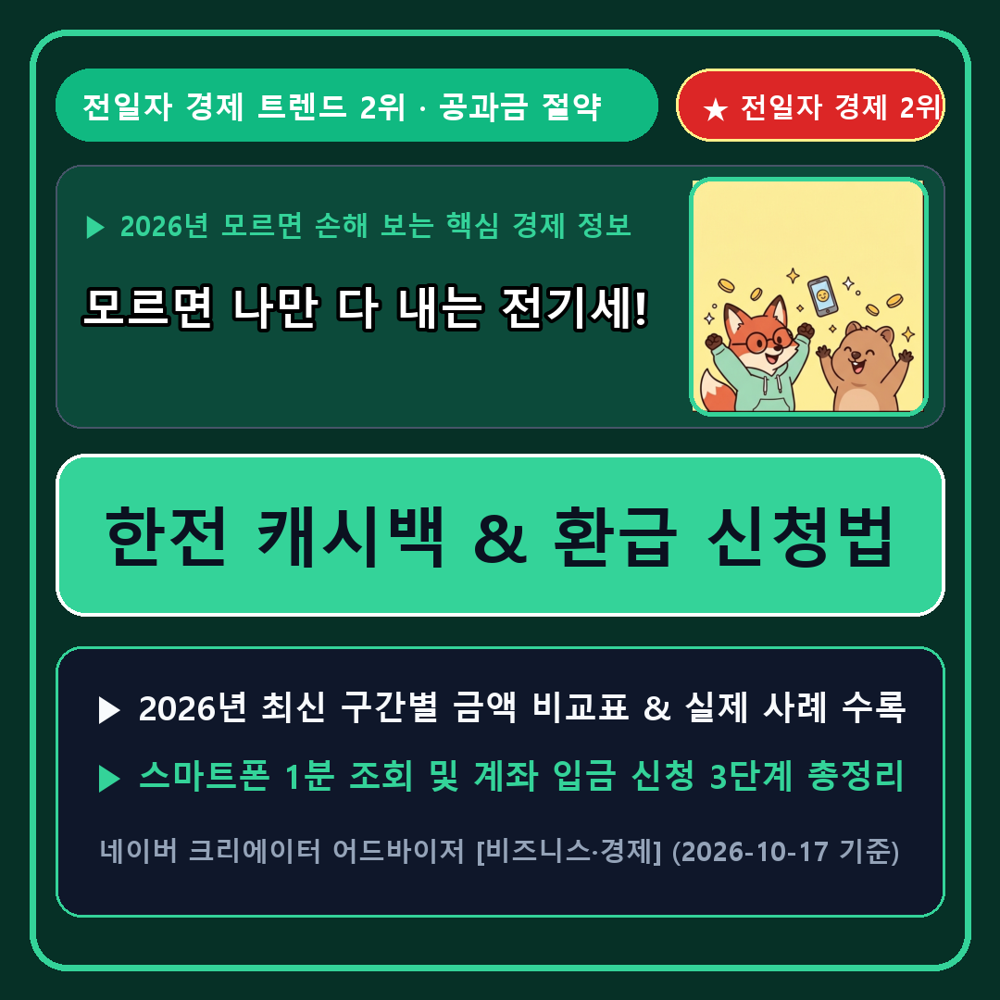

2_homefeed_thumbnails/2026-10-19_slot2_ca-econ-electric-cashback-voucher_thumb.png (스마트에디터 최상단 대표사진 지정 필수)3_clip_webtoon_crank_safe/2026-10-19_clip2_ca-econ-electric-cashback-voucher.mp4💬 "모르고 그냥 냈다가 매달 생돈 나갔네요! 한 번 등록으로 전기세 자동 할인"

▲ 모르면 나만 다 내는 전기세! 한전 캐시백 & 환급 신청법 핵심 요약
달마다 날아오는 관리비 고지서에서 전기요금 항목 볼 때마다 한숨부터 나오시죠? 저도 "우리 집은 왜 이렇게 많이 나오지?" 싶어서 알아보다가, 한국전력에 '에너지캐시백'을 한 번만 등록해 두면 다음 달 고지서부터 요금을 자동으로 깎아준다는 사실을 알고 바로 신청했습니다.
게다가 주택용 전력의 '누진세 3구간(400kWh)' 경계선만 살짝 피해도 한 달에 3만~5만 원이 그대로 굳더라고요.
어제 네이버 크리에이터 어드바이저 경제 분야에서도 실시간 검색어 상위에 오른 '한전 에너지캐시백 & 고효율 가전 환급금 신청법'을 오늘 바로 따라 하실 수 있게 핵심만 짚어드립니다.
한전 주택용 에너지캐시백은 과거 2년 동안의 같은 달 평균 전력 사용량보다 3% 이상 전기 사용을 줄이면, 절감량 1kWh당 기본캐시백(30원)과 차등캐시백(30~70원)을 합쳐 1kWh당 최대 100원을 다음 달 전기요금 고지서에서 바로 깎아주는 전국민 인센티브 제도입니다.
한 번만 온라인으로 신청해 두면 매달 다시 신청할 필요 없이 자동으로 측정·차감되므로, 아파트든 빌라든 오피스텔이든 거주 중이시라면 무조건 등록해 두는 것이 이득입니다.
왜 대기전력 15~20kWh를 줄이는 것이 중요한지 아래 한전 주택용 누진 구간표를 보면 단번에 이해됩니다.
| 누진 단계 구간 | 월간 전력 사용량 기준 | 기본요금 수준 | kWh당 전력량 요금 특징 | 실전 방어 전략 |
|---|---|---|---|---|
| 1구간 (안심) | 200 kWh 이하 | 최저 기본요금 | 가장 저렴한 기본 단가 적용 | 1~2인 가구 평시 구간 |
| 2구간 (주의) | 201 ~ 400 kWh | 중간 기본요금 | 1구간 대비 단가 약 1.6배 상승 | 400kWh 초과 방어가 핵심 |
| 3구간 (폭탄) | 400 kWh 초과 | 최고 기본요금 점프 | 1구간 대비 단가 약 2.5배 폭등 | 에너지캐시백·대기전력 차단 필수 |
STEP 1. 네이버 검색창에 '한전 에너지캐시백'을 검색하거나 스마트폰에서 '한전ON' 앱을 켭니다.
STEP 2. 본인 인증 후 현재 주민등록상 거주지 주소를 불러와 세대 구성원 정보를 확인하고 [캐시백 참여 신청]을 누르면 1분 만에 끝납니다.
STEP 3. 만약 출산가구(3년 미만), 다자녀(3자녀 이상), 대가족(5인 이상) 등 복지할인 가구에 해당한다면 '한전 고효율 가전제품 구매비용 지원사업'까지 함께 신청해 1등급 가전 구매가의 10~20%(최대 30만 원)까지 현금으로 돌려받으세요.
Q1. 한전에 직접 요금을 안 내고 아파트 관리비로 내는데 어떻게 돌려받나요?
아파트 단지 전체 고지서에서 신청 세대의 절감 캐시백 금액만큼 관리사무소로 통보되어, 다음 달 우리 집 관리비 고지서의 전기요금 항목에서 자동으로 차감 청구됩니다.
Q2. 전기 사용량이 오히려 늘어나면 불이익이나 페널티가 있나요?
전혀 없습니다! 사용량이 늘어난 달에는 캐시백만 0원일 뿐 어떤 불이익도 없으므로 신청하지 않을 이유가 없습니다.
💬 오늘 정리해 드린 『한전 캐시백 & 환급 신청법』, 지금 바로 1분만 투자해 확인해 보세요!
• [네이버 클립 & 공식 카페]: 한눈에 들어오는 8초 웹툰 요약 영상(네이버 클립)과 질의응답·체크리스트 게시판(네이버 카페)에서도 매주 새로운 생활경제·환급금 정보를 가장 빠르게 받아보실 수 있습니다.
❤️ 이 글이 도움 되셨다면 아래 [공감 ♥]과 [서로이웃 추가 +] 꾹 눌러두시고, 궁금한 점은 댓글로 편하게 남겨주세요!